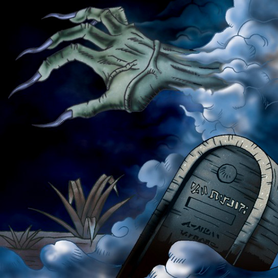

Graveyard and the Hand of Invitation

Description: "When this card is flipped face-up, all your monsters are transformed into ZOMBIE monsters."
STATS
ATK: 700
DEF: 900DECK COST
Deck Cost per Card: 21EFFECT NOT IMPLEMENTED
Fusion List (17 Possible Fusions)
- Graveyard and the Hand of Invitation + Armaill = Zombie Warrior
- Graveyard and the Hand of Invitation + Bean Soldier = Pumpking the King of Ghosts
- Graveyard and the Hand of Invitation + Blue-Eyed Silver Zombie = The Snake Hair
- Graveyard and the Hand of Invitation + Boo Koo = Magical Ghost
- Graveyard and the Hand of Invitation + Corroding Shark = The Snake Hair
- Graveyard and the Hand of Invitation + Dragon Zombie = Skelgon
- Graveyard and the Hand of Invitation + Fire Reaper = The Snake Hair
- Graveyard and the Hand of Invitation + Firegrass = Wood Remains
- Graveyard and the Hand of Invitation + M-Warrior #2 = Zombie Warrior
- Graveyard and the Hand of Invitation + Magician of Faith = Magical Ghost
- Graveyard and the Hand of Invitation + Man Eater = Wood Remains
- Graveyard and the Hand of Invitation + Mushroom Man = Wood Remains
- Graveyard and the Hand of Invitation + Princess of Tsurugi = Zombie Warrior
- Graveyard and the Hand of Invitation + Shadow Specter = The Snake Hair
- Graveyard and the Hand of Invitation + Skull Servant = The Snake Hair
- Graveyard and the Hand of Invitation + The Wandering Doomed = The Snake Hair
- Graveyard and the Hand of Invitation + Yashinoki = Wood Remains